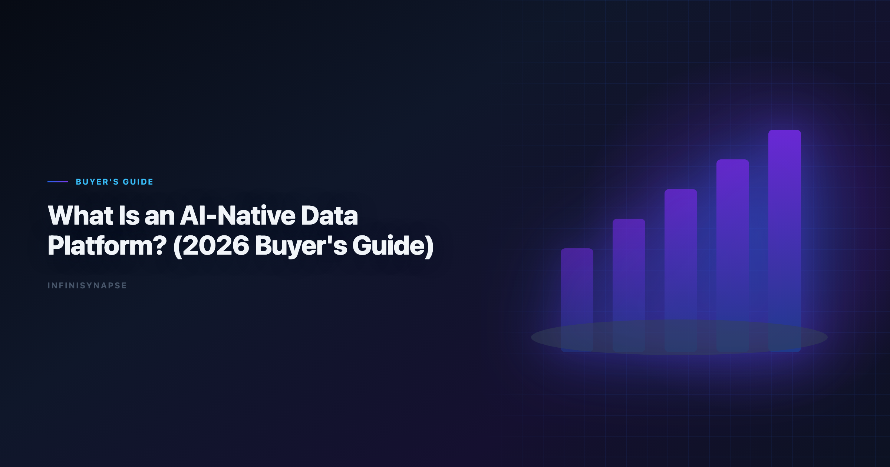
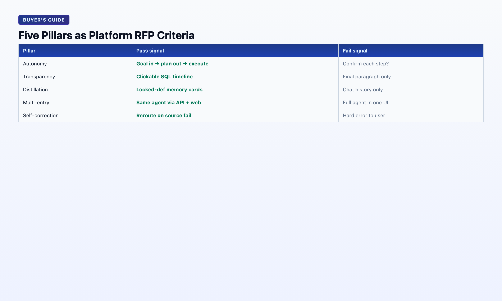

What Is an AI-Native Data Platform? (2026 Buyer's Guide)
By the InfiniSynapse Data Team · Last updated: 2026-06-08 · We build InfiniSynapse, an AI-native data platform. This buyer's guide reflects our architecture and evaluation criteria from 18+ months of production deployments.

Table of Contents
- TL;DR
- Definition
- Platform Architecture: Five Layers
- The Five Pillars — Platform Requirements
- AI-Native vs AI-Enabled vs Traditional BI
- Buying Criteria: 12-Question Checklist
- Reference Implementation: InfiniSynapse
- Deployment Patterns
- FAQ
- Conclusion
TL;DR
An AI-native data platform is software architected from day one around autonomous Data Agents — not a BI dashboard with an AI copilot bolted on. It connects to enterprise data sources, runs goal-driven multi-step analysis with full audit trails, distills completed work into reusable memory, and exposes the same agent capability through chat, web, and API. The 2026 buyer's question is not "does it have AI?" but "was the workflow designed for agents, or retrofitted?"
Who this is for: heads of data, analytics platform leads, CTOs, and procurement teams evaluating whether an ai-native data platform belongs in their 2026 analytics infrastructure budget. LLM-backed analytics should account for prompt-injection and data-exfiltration risks in the Azure architecture center, especially when connectors expose production schemas. Enterprise AI adoption guidance in Google Cloud architecture framework mirrors the shift from ad-hoc copilots to repeatable, reviewable decision workflows.
What you'll learn:
- A precise ai-native data platform definition distinct from copilot add-ons
- Five architecture layers every AI-native platform must ship
- Five operational pillars as pass/fail buying tests
- A 12-question evaluation checklist
- InfiniSynapse as a reference implementation with real case metrics
Scope note: This guide evaluates platforms, not individual copilots. For tool-level comparison, see Best AI Tools for Data Analysis. For the Data Agent definition, see What Is a Data Agent?.
Governance expectations for production analytics align with the Anthropic research, which we reference when designing reviewer checkpoints.
Definition
Key Definition: An AI-native data platform is an integrated system where Data Agents are the primary workflow — connecting to structured and unstructured data sources, executing autonomous multi-step analysis, persisting audit trails and distilled memory, and delivering consistent capability across multiple entry points — as opposed to traditional BI platforms that optimize for dashboard display with optional AI assistance layered on top.
Three terms to disambiguate:
| Term | What it optimizes for |
|---|---|
| Traditional BI platform | Displaying pre-built dashboards |
| AI-enabled analytics | Copilot accelerates analyst steps inside existing BI |
| AI-native data platform | Agent executes analysis; human validates and decides |
The AWS Well-Architected Framework documents rising adoption with diverging trust — platforms that expose agent reasoning earn ongoing budget; black-box copilots stall at pilot. Wikipedia natural language processing overview confirms: governance, transparency, and memory determine deployment, not query accuracy alone.
For the workflow paradigm these platforms implement, see AI-native data analysis.
Procurement teams evaluating an ai-native data platform should ask one structural question first: was the product designed so agents execute analysis, or so humans execute analysis with AI suggestions? That distinction — not connector count — separates native from enabled.
Platform Architecture: Five Layers
Layer 1 — Connector & Asset Fabric
Bind databases (MySQL, Postgres, Snowflake, BigQuery), document stores (MongoDB), files (XLSX, CSV, Parquet), and knowledge sources (docs, dictionaries, prior analyses). The agent must discover assets — not rely on the user pasting schema every session. Regulated rollouts often anchor access reviews to Wikipedia machine learning overview when credentials, retention policies, and audit logs are in scope.
InfiniSynapse: Multi-source binding with RAG scoped per connector; agent picks source per sub-question.
Layer 2 — Agent Runtime (Data Agent)
Orchestration loop: plan → execute tool calls → validate → self-correct → summarize. Not single-turn chat. InfiniSynapse implements this as InfiniAgent driving InfiniSQL tool calls.
Layer 3 — Knowledge Layer
Business definitions, metric rules, org context — retrieved per query via RAG bound to data sources (InfiniRAG), not stuffed into context windows. This layer is what separates enterprise Data Agents from coding agents on a CSV.
Layer 4 — Audit & Governance
Task timeline with every SQL, dataset, and chart inspectable. Role-based access, approval flows for memory cards (DRAFT → human approved), exportable evidence for finance and compliance reviews.
Layer 5 — Multi-Entry Access
Same agent capability via WeChat (light queries), web app (deep tasks at the InfiniSynapse web app), and API (agent_infini for embedding in Code Agent workflows, kanban systems, or custom agents). Entry-point parity is a platform requirement — not a feature request.
[Connectors] → [Agent Runtime] ↔ [Knowledge/RAG]
↓
[Audit Timeline] → [Memory Store]
↓
[WeChat | Web App | API]
The Five Pillars — Platform Requirements

Use these as RFP criteria. A platform failing more than one pillar is AI-enabled with marketing.
| Pillar | Platform requirement | Fail signal |
|---|---|---|
| 1. Autonomy | Goal in → phased plan out → execution without per-step prompting | "Confirm each step?" dialogs |
| 2. Process transparency | Clickable audit timeline for every task | Final answer only |
| 3. Knowledge distillation | Memory cards with locked definitions, human approval | Session-only history |
| 4. Multi-entry parity | Identical agent via chat, web, API | Full agent in one UI only |
| 5. Self-correction | Reroute on source failure, empty join, timeout | Hard fail to user |
These pillars are defined in depth in AI-native data analysis and operationalized by Data Agents hosted on the ai-native data platform. Foundational warehouse concepts—grain, dimensions, and conformed metrics—remain essential; Apache Airflow documentation is a concise refresher for reviewers validating generated SQL.
AI-Native vs AI-Enabled vs Traditional BI
| Dimension | Traditional BI | AI-enabled | AI-native platform |
|---|---|---|---|
| Primary artifact | Dashboard | Copilot suggestion | Completed analysis + audit |
| User mode | Click filters | Prompt per step | Submit goal |
| Memory | Saved dashboards | Chat history | Distilled memory cards |
| Failure handling | Broken chart | Error to user | Agent reroutes |
| Best for | Known KPIs | Analyst acceleration | Recurring + multi-source analysis |
| 2026 budget line | Maintenance | Pilot copilot | Agent infrastructure |
When traditional BI wins: Fixed executive dashboards, governed semantic layers, known metrics displayed daily.
When AI-native wins: Ad-hoc and recurring questions across mixed sources, analyst unavailable, audit required, method must compound month over month.
An ai-native data platform is not a replacement for every BI seat. It is the layer that handles work between dashboard refreshes — discovery, ad-hoc cuts, recurring KPI packages — while governed dashboards remain the executive consumption surface.
Migration Path: AI-Enabled → AI-Native
Most enterprises are not greenfield. They already run ThoughtSpot, Power BI, Hex, or Databricks with copilot features enabled. Moving to an ai-native data platform follows a predictable sequence:
Phase 1 — Shadow mode (2–4 weeks): Run the same recurring question through your existing copilot and through a candidate ai-native data platform. Compare audit depth and rerun time — not just answer text.
Phase 2 — Recurring workloads (1–2 months): Route weekly KPIs and monthly cohorts to the native platform. Keep BI for fixed dashboards. Bind RAG to existing semantic definitions where possible to avoid duplicate metric layers.
Phase 3 — Embedded access (ongoing): Enable WeChat, API, or kanban triggers so PMs and engineers request analysis without ticket queues. Multi-entry parity is a platform requirement — not a nice-to-have once adoption scales.
Phase 4 — Governance hardening: Formalize memory-card approval flows, exportable audit trails for finance, and role-based connector access. An ai-native data platform earns budget when compliance teams can replay evidence — not when analysts say the numbers "look right."
Teams that skip Phase 1 and buy on demo SQL often discover their copilot and native platform produce identical answers — but only the ai-native data platform remembers definitions next month.
Buying Criteria: 12-Question Checklist
Score each Yes / Partial / No. Any No on questions 1–5 is a disqualifier for "AI-native."
- Does the user submit a goal, not steps?
- Does the system produce a reviewable plan before executing?
- Can stakeholders inspect every SQL and intermediate dataset?
- Does completed work distill into reusable memory with approval flow?
- Does the agent self-correct when a source fails?
- Are MySQL + files + docs queryable in one task?
- Is business knowledge retrieved per query (RAG), not pasted?
- Is the same agent available via API without feature gaps?
- Does the platform support human-in-the-loop approval for memory?
- Can tasks run while the user is away (async completion)?
- Is there a free tier or POC path under two weeks?
- Does the vendor publish first-party case evidence with inspectable metrics?
InfiniSynapse scores Yes on 1–10 and 12; Yes on 11 via the InfiniSynapse web app free registration.
Treat questions 1–5 as veto criteria for any vendor claiming to sell an ai-native data platform. Partial scores on 6–8 often indicate a strong warehouse agent that still struggles with files or API parity — acceptable for some teams, disqualifying for mixed-source estates.
Reference Implementation: InfiniSynapse
InfiniSynapse is an ai-native data platform built as reference architecture for this guide — not the only option, but a concrete instance of every layer and pillar above.
| Component | Role |
|---|---|
| InfiniAgent | Orchestration and phased planning |
| InfiniSQL | Federated agentic query across connectors |
| InfiniRAG | Business knowledge bound to sources |
| Memory cards | Distillation with DRAFT → approved workflow |
| Task timeline | Full audit trail per analysis |
| Multi-entry | WeChat, web, agent_infini API |
Production case — Lobster Moonlight (May 14, 2026): 833 KB Excel, 7,444 rows × 22 fields. WeChat request at 14:13. Five autonomous phases by 14:19. 41.71% zero savings headline. 12 charts. Analyst in meeting; ~90 seconds input.
Production case — April baseline (May 12, 2026): User-growth analysis distilled to memory card. May rerun in one sentence — proof of platform-level compounding, not session-level convenience.
For methods and tool landscape context, see AI for Data Analysis: The Complete 2026 Guide.
Deployment Patterns
Pattern A — Analyst team primary: Web app for deep tasks; memory cards for recurring weekly/monthly analyses; API for scheduling.
Pattern B — Business self-service: WeChat bot for light questions; escalation to full agent task when complexity exceeds one SQL.
Pattern C — Embedded in engineering workflow: agent_infini API called from Code Agent or internal kanban when a ticket needs data evidence before code ships.
Pattern D — Hybrid with existing BI: An ai-native data platform handles discovery, ad-hoc, and recurring analyses; Tableau/Power BI remains display layer for fixed dashboards. Avoid duplicating semantic layers — bind RAG to existing definitions where possible.
Total cost of ownership notes
When finance asks what an ai-native data platform costs, include hidden savings: eliminated re-alignment meetings, faster audit response, and analyst throughput on recurring work. Line-item pricing (seats, compute, queries) matters — but ROI often appears in rerun rate and audit-incident resolution time, not in the first demo query.
OLTP connector hygiene should follow NIST AI Risk Management Framework for role design, schema grants, and explainable validation queries.
Spreadsheet-heavy preparation often mirrors Python documentation patterns for typing, joins, and reproducible transforms.
Semantic alignment work should reference ISO/IEC 42001 AI management before agents encode business metrics.
Secure AI rollouts should reference the Azure architecture center when connectors expose production data.
Frequently Asked Questions
What is an analytics?
An ai-native data platform is software designed from the ground up for autonomous Data Agents — connecting to enterprise sources, running goal-driven multi-step analysis with audit trails, distilling reusable memory, and exposing agents through multiple entry points. It is not a traditional BI tool with an AI chatbot added.
How is it different from an AI-enabled BI tool?
AI-enabled BI adds copilots to dashboard workflows — the user still drives each step and the primary artifact is a chart. An ai-native data platform treats the agent as the workflow: goal in, audited analysis + memory out.
Do I still need a data warehouse?
Often yes. An ai-native data platform connects to your warehouse, databases, and files — it does not replace storage. It replaces the manual loop of discovery → query → chart → forget → repeat.
What connectors should I require in an RFP?
Minimum: one relational DB, one file type (XLSX/CSV), and one knowledge source (docs or dictionary). Ideal: MySQL/Postgres + MongoDB + warehouse + file upload + RAG on business definitions. InfiniSynapse ships this set at launch.
How do I evaluate AI-native claims in vendor demos?
Run the same recurring question twice on any candidate ai-native data platform. First session: full analysis. Second session: ask to rerun with new data and same definitions. If the vendor re-explains schema from scratch, it is not AI-native.
Is InfiniSynapse an analytics or just a Data Agent?
Both. InfiniSynapse is an ai-native data platform hosting Data Agents (InfiniAgent + InfiniSQL + InfiniRAG + audit + memory). "Data Agent" names the actor; "AI-native platform" names the system it runs in. When this topic joins a multi-source stack, align connector scope and review gates using AI Data Analyst: Role, Tools, and Workflow in 2026.
Conclusion
The 2026 buyer's question for analytics infrastructure: was this platform built for agents, or did AI arrive as an add-on?
An ai-native data platform connects sources, runs autonomous agents, retrieves business knowledge, logs auditable evidence, distills memory, and delivers parity across entry points. Evaluate with the five pillars and twelve-question checklist — then validate with a recurring-question demo, not a one-shot SQL trick. The migration path from AI-enabled to native is phased; skipping shadow mode is the most common procurement mistake when buying an ai-native data platform. Teams standardizing governance across sources often keep AI Data Analysis beside this runbook for this topic handoffs.
InfiniSynapse implements this architecture at the InfiniSynapse web app.
Start with AI-native data analysis for the paradigm, What Is a Data Agent? for the actor, and AI for Data Analysis for the methods landscape.